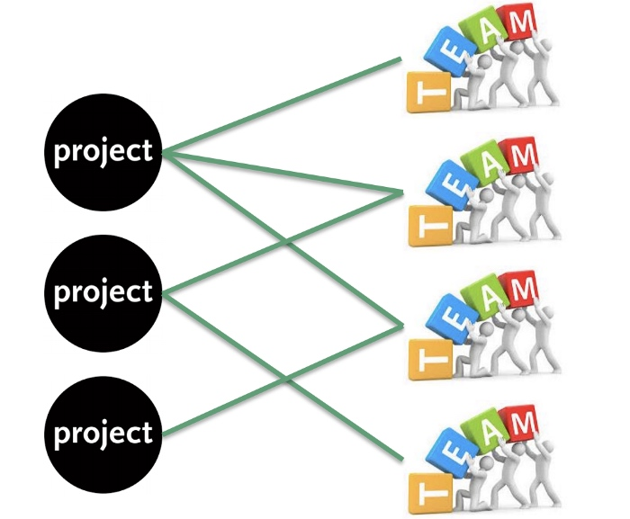

写在前面：
从业多年，有在Tencent和ByteDance这样的大公司，也有QDaily这样的创业经历，大小项目做过不少，涉及的业务复杂度很高，合作方也很多，在工作中，做过一些项目管理和推进的思考和尝试，这里整理一下，和同样感兴趣的人或者有相关困惑的同学一起做做交流。
下面先整理了目录，接下来半个月，会按照这个顺序逐步拆解下这个话题。
一、从概念说起，好的项目管理对团队有什么意义
剧透：项目管理概念来源于西方，最初应用于军工、重大政府公共项目....
…
二、貌似是“银弹”的敏捷开发，为什么“只闻其名不见其人”？
剧透：每个CHAISONG专业的同学，可能在入学最开始就被人安利敏捷开发模式，同时鄙视下瀑布模型，但其实大多数人工作很多年都没有见过“猪跑”...
…
三、经验分享：团队的敏捷管理（Scrum Master）和项目的Owner负责制
剧透：通过大量的项目管理理论知识和具体的工程实践，在ByteDance，我们团队落地了了一套适合自己的协作管理模式...
…
四、在ByteDance，App开发需要怎样的项目管理？
剧透：这部分，我会拆解整个项目的生命周期，结合具体case来聊聊针对C端互联网产品的迭代，我们到底需要怎样的项目管理...
…